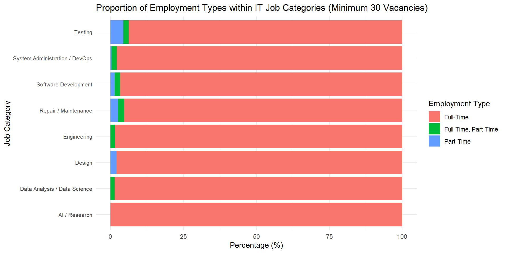
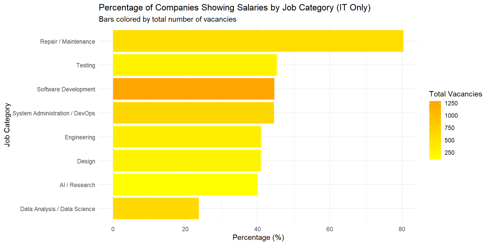
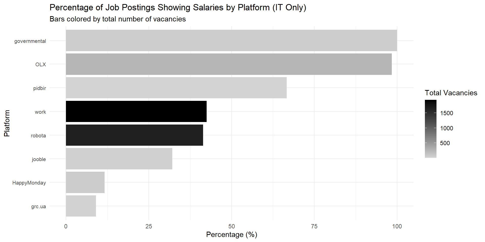
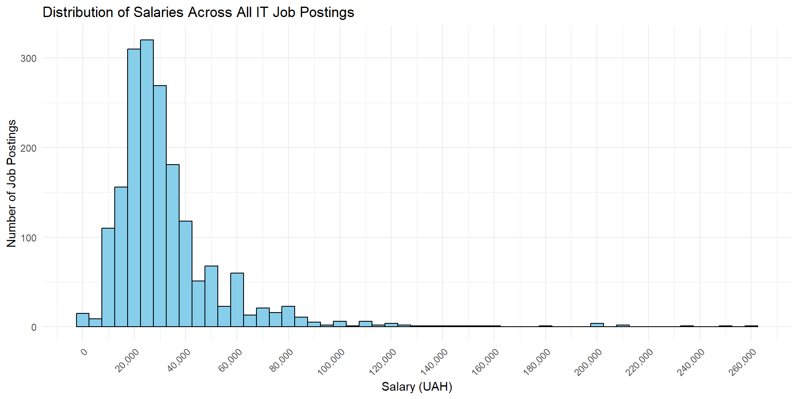

We are a team of students with a shared interest in understanding the dynamics of the IT job market as we prepare to enter the workforce ourselves. Finding the right opportunities in a highly competitive and diverse industry is crucial for us, and this project reflects our curiosity and excitement about uncovering trends that can guide not only our career choices but also help others in similar situations.
Objectives and Excitement
Through this analysis, we aim to explore:
Which job categories and cities offer the highest salaries?
How does employment type impact compensation?
What is the level of salary transparency across job categories and platforms?
What patterns can we observe in the distribution of salaries?
Objectives and Excitement
By focusing on these questions, we hope to gain valuable insights into the job market and share findings that could benefit our peers and the wider community.
Data Scraping: An Overview
Purpose of Data Scraping
Goal: Extract IT job listings from different websites.
Tools Used:
Python
Selenium (for automated web scraping)
Pandas (for data storage and manipulation)
Code Breakdown: Import Libraries
import pandas as pd # Data manipulation and storage# Selenium imports for web scrapingfrom selenium import webdriverfrom selenium.webdriver.common.by import Byfrom selenium.webdriver.remote.webelement import WebElementfrom general_functions import*# Custom functions for logging and other tasks
General Functions: Helper functions like print_log for better logging.
Pandas: Used to store data in a structured DataFrame.
Selenium: Automates browser interactions for web scraping.
Fetching Offer Details
def fetch_offer_details_by_value(olx_offer: WebElement, value: str) -> WebElement orNoneorlist:try: elements = olx_offer.find_elements(By.CSS_SELECTOR, value)ifnot elements: print_log('WARNING', f"No elements found for selector {value}.")returnNoneif value =='p.css-s7oag9':return elements elif value =='span.css-17tytap':return elementsreturn elements[0] # Single element for title or salaryexceptExceptionas e: print_log('ERROR', f"Error extracting details:\n{e}")returnNone
Extracts details like title, salary… from a single offer.
Complex Cases: Differentiates between single and multiple elements based on the CSS selector.
Navigates to the provided page_url using Selenium.
Extracting details using the fetch_offer_details_by_value function.
Scraping Across Platforms
We applied similar scraping methods to multiple job listing websites, including:
OLX, Happy Monday, Robota.ua, Державна служба зайнятості, and Work.ua.
Adjusted for dynamic elements, pagination, and platform-specific layouts.
Ensured robust error handling for structural variations.
This approach allowed us to compile a comprehensive dataset of IT vacancies, providing insights into trends and opportunities across platforms.
Data cleaning
Data Cleaning Process
The primary objective in this step was to standardize job data from various sources, clean it, and group the professions into meaningful categories. This included handling salary ranges, standardizing employment types, and cleaning location names.
Creating Essential Columns
We standardized the dataset by creating the following columns:
Title: Job title.
Location: Job location, with remote jobs marked as “remote”.
Company: The company offering the job.
Employment_Type: Employment type (e.g., Full-Time, Part-Time).
site_name: Source of the job posting.
Creating Essential Columns
We standardized the dataset by creating the following columns:
Highest Salaries: Remote positions offer the highest average salaries, reflecting flexibility as a key factor in compensation.
Top City: Kyiv leads in both average salary and total vacancies, making it a hub for IT jobs.
Competitive Markets: Cities like Odesa, Lviv, and Dnipro offer substantial salaries but have fewer vacancies compared to Kyiv.
Smaller Cities: Vinnytsia has fewer vacancies and lower average salaries, indicating limited opportunities compared to larger cities.
Proportion of Employment Types within IT Job Categories

Employment Types by Job Category. Insights:
Full-Time Dominance: Most IT job categories are overwhelmingly full-time, accounting for nearly 100% of roles.
Limited Flexibility: Part-time and mixed (full-time, part-time) roles are scarce across all categories.
Testing and DevOps: These categories show slightly more diversity in employment types compared to others.
Percentage of Companies Showing Salaries

% Showing Salaries. Insights:
Highest Transparency: Repair/Maintenance roles lead in salary transparency.
Software Development: Fewer companies disclose salaries despite high pay.
Specialized Roles: AI/Research and Data Science have lower transparency.
General Trend: Less specialized roles show higher transparency.
Percentage of Job Postings Showing Salaries by Platform

% Showing Salaries by Platform. Insights:
Most Transparent: Governmental platforms lead in salary disclosures.
High Transparency: OLX and Pidbir also show significant salary transparency.
Lower Transparency: Work.ua and Robota.ua have many vacancies but fewer salary disclosures.
Least Transparent: HappyMonday and grc.ua show the lowest transparency.
Salary Distribution Across IT Jobs

Salary Distribution Across IT Jobs. Insights:
Cluster: Most salaries fall between 20,000-40,000 UAH.
Higher Salaries Rare: Few postings exceed 60,000 UAH.
Outliers: High salaries over 100,000 UAH are rare.
Skewed Distribution: Majority of jobs are in lower salary ranges.
Conclusion and Summary
Our analysis revealed critical insights into the IT job market:
Salary Trends:
Software Development and Data Science roles offer the highest average salaries, emphasizing the demand for specialized skills.
Most salaries are clustered between 20,000-40,000 UAH, with few high-paying outliers.
Conclusion and Summary
Our analysis revealed critical insights into the IT job market:
Employment Types:
Full-time roles dominate across all job categories, with limited flexibility in part-time opportunities.
Regional Insights:
Kyiv leads in both average salaries and total vacancies, while remote positions offer the highest compensation.
Conclusion and Summary
Our analysis revealed critical insights into the IT job market:
Salary Transparency:
Platforms and job categories vary significantly in transparency, with governmental platforms and less specialized roles being more open about compensation.
Platform-Specific Patterns:
Governmental and OLX platforms demonstrate higher transparency, while Work.ua and Robota.ua dominate in total vacancies but disclose salaries less often.
Conclusion and Summary
These findings highlight the importance of specialization, regional focus, and transparency in shaping the IT job market. As students actively looking for jobs, understanding these trends is invaluable for us to identify the best opportunities and make informed decisions. This project has given us deeper insights into the IT industry, which we hope will serve as a resource for others embarking on their professional journey.
Task Distribution
Denys Mykhailov
Created a Python script for web scraping
Conducted scraping for OLX
Developed a Quarto presentation
Kvitka Yarish
Scraped data from HappyMonday and the State Employment Service
Performed data cleaning, categorization, and standardization